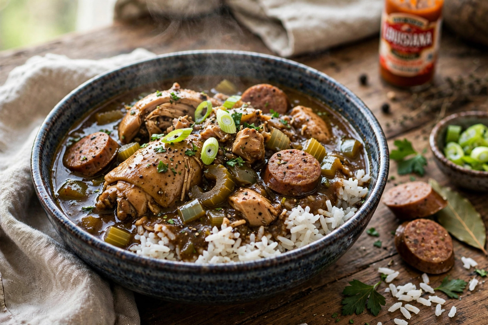

From Wikipedia, the free encyclopedia
| Gumbo | |
|---|---|
 | |
| Type | Stew |
| Place of origin | Louisiana, United States |
| Main ingredients | Roux, stock, "holy trinity" vegetables, meat or seafood, okra or filé |
Gumbo is a stew that originated in southern Louisiana during the 18th century and is the official state cuisine of Louisiana. It consists primarily of a strongly flavoured stock, meat or shellfish, a thickener, and the Cajun/Creole "holy trinity" of vegetables: celery, bell peppers, and onions. Gumbo is traditionally served over rice.
Gumbo is characteristically thickened with one or more of three methods: a dark roux (flour cooked in fat, central to Cajun versions), okra, or filé powder (ground sassafras leaves, from Choctaw tradition, stirred in at the table). Creole gumbos of New Orleans often include tomatoes and a lighter roux; seafood gumbo features shrimp, crab, and oysters, while country gumbos use chicken, duck, and andouille sausage.
The dish reflects Louisiana's blended cultures: West African okra stews (the name may derive from a Bantu word for okra, ki ngombo), French roux-based cooking, Spanish ingredients, Native American filé, and German sausage-making. Gumbo is a centrepiece of both Cajun and Louisiana Creole cuisines.